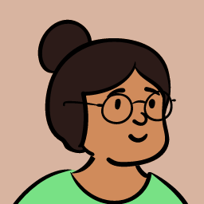
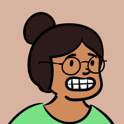

Today the first thing someone sees is a line and a button: "You think you know it. Prove it." It is a good line, but it only asks for a click. These ideas all do the opposite: they put you in the product within five seconds, so the hook is a feeling, not a sentence. Each one below is a working prototype. Play with it.
No headline. A question and a countdown. You answer in a sentence, then Grandma asks "but why?" three times. Almost everyone runs out of road by round two, and that feeling (I do not actually know this) is the whole product.

Pick something you know. Slide to say how well you know it. Then it shows the gap between how well you think you know it and how Grandma would rate it. The app already measures exactly this gap on the notes page. Here it becomes the opening move.
A tiny word game, playable in 20 seconds: explain the internet to Grandma without the forbidden words. Every banned word you type lights up red, shakes, and adds to your jargon debt. This is already one of the app's best mechanics. The idea is to make it the front door.
A dark screen. Your cursor is a spotlight, and sitting in the dark are the six people you might present to: the new hire, the line operator, the one who keeps asking why, the manager, the colleague from another department, the auditor. Hover to meet them. They say what they will ask you. The message lands without a word of marketing: an audience is waiting.
Grandma is alive on the first screen. Her head follows your cursor, her mouth moves while she talks, and she greets you with a line that changes. If you wait too long she says "Still there, dear?" and the mic button starts to pulse. The characters already have talking mouths, so this is the same asset used with more life.

None of the five above needs anything extra. These are for taking them further. All can be bundled, so nothing is fetched from a third party at runtime.
Draw Grandma once with blinking, eyebrows and mouth shapes, and drive her from code (listening, thinking, speaking). Small files and smoother than image swapping.
Ready-made micro-animations (confetti, checkmarks, mic pulses). Cheap polish, but generic. Use sparingly.
A 3D room with the six people sitting around a table, camera moving as you scroll. Striking, but heavy and slower to load on a laptop in a meeting.
For a scroll-driven story ("You nodded along. Now explain it."). Smooth, but make sure reduced-motion users get a calm version.
Pre-record a handful of Grandma greetings once and ship them as small audio files. Real voice on the first click without a live call or any cloud request.
Let people speak their first answer in idea 1 instead of typing. Caution: in some browsers it sends audio to the browser vendor, so it must never be used in document mode.
Dust in the spotlight for idea 4, confetti when you cover all four points. Small and optional.
Paste idea 1 or 5 as a prompt and let one of these produce five visual treatments in minutes. Good for picking a look. Do not send them a real document or any private text.